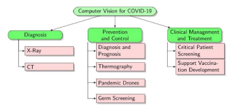

Introduzione al corso. Image Processing, Analysis e Computer Vision.
Slides disponibili qui (Con video associato su Microsoft Stream)
Riferimenti bibliografici
- [Davies18], ch. 1.
- [Elg20], sect. 1.1-1.3.
- [Gon18], Ch. 1.
- [Sze11], Ch. 1,2.
Link utili
- Introduction to Computer Vision
- A gentle introduction to Computer Vision
- A Beginner’s guide to Computer Vision
- Everything you wanted to know about Computer Vision
- The Computer Vision Foundation
- Three ways Computer Vision is transforming Marketing
- https://www.sciencedirect.com/science/article/pii/S0168169902001011)
Approfondimento: Ambiti applicativi (con il contributo degli studenti)
Rilevamento attenzione del conducente1
Gli algoritmi di apprendimento automatico e deep learning, a cui sono stati forniti migliaia di dati di volti attenti e disattenti, possono rilevare differenze tra occhi concentrati e stanchi, nonché indizi che rivelano una guida distratta. L’intelligenza artificiale in questo contesto è importante perché permette di proteggere sia il conducente che le altre entità limitrofe. Questo aspetto della computer vision inoltre può essere usato per rilevare eventuali conducenti che guidano in stato di ebbrezza.
Conteggio persone e distanza COVID1
Purtroppo il 2020 ha visto il diffondersi di un virus che ha investito la popolazione mondiale. Ogni persona è stata costretta a dover rispettare delle regole per cercare di contrastare il diffondersi della pandemia ed anche in questo spiacevole contesto, la computer vision ha assunto un ruolo peculiare. La tecnologia di interesse è stata sfruttata per esempio per rilevare eventuali assembramenti, per il conteggio delle persone, per l’individuazione di soggetti privi di mascherina. Uno dei progetti di ricerca anti-Covid a cui lavora Unimore ha l’obiettivo di realizzare un sistema che analizza i video, localizza le persone nello spazio 3D, riconosce le mascherine e calcola distanze. Usa l’intelligenza artificiale per il distanziamento sociale in spazi aperti e può essere di grande aiuto alle istituzioni per il calcolo in tempo reale degli assembramenti, così da ridurre il rischio di contagio nei luoghi pubblici.
Drishti, intelligenza artificiale al servizio degli ipovedenti1
Drishti, dal sanscrito “sguardo” è una tecnologia che attraverso un paio di occhiali, similissimi a comuni occhiali, e grazie alla tecnologia racchiusa in essi permette alle persone ipovedenti di guardare ciò che li circonda. Questa tecnologia permette di avere un senso in più: un senso tecnologico, fatto di bit e intelligenza artificiale, che attraverso una micro-camera nascosta nella montatura degli smart glasses e ad un software sviluppato dagli “Accenture Labs” consente anche a chi è ipovedente o cieco di gettare uno sguardo sul mondo che lo circonda.
Manifacturing1
Nell’ambito della produzione, la visione artificiale abbinata ai sensori può essere sfruttata per gestire e monitorare lo stato delle apparecchiature e degli strumenti. Oggi, la tecnologia viene utilizzata per controllare importanti impianti o attrezzature al loro interno. I guasti e i problemi dell’infrastruttura possono essere prevenuti con l’aiuto di una visione artificiale realizzata per stimare lo stato e l’efficienza delle macchine. Molte aziende stanno usando questa tipologia di manutenzione per mantenere i propri strumenti in buone condizioni. Ad esempio, il software ZDT realizzato da FANUC è un software di manutenzione preventiva progettato per raccogliere immagini dalla telecamera collegata ai robot. Quindi questi dati vengono elaborati per fornire la diagnosi dei problemi e rilevare eventuali problemi potenziali.
Video sorveglianza e Customer profiling1
La Computer Vision viene applicata alla videosorveglianza automatica per una serie di obiettivi che includono la gestione delle folle e la misurazione dell’efficacia del marketing. Grazie al Deep Learning possono essere sviluppate anche soluzioni per il conteggio delle persone e Stazioni ferroviarie, aeroporti, parcheggi, centri commerciali, stadi: in tutti questi luoghi, i sistemi di videosorveglianza possono diventare più veloci e affidabili se sfruttano le potenzialità della smart safety integrata con l’intelligenza artificiale.
VISION-2 (startup BInoocle)2
“VISION-2 è un sistema avanzato di Intelligenza Artificiale immediatamente installabile, con nessuna necessità di assistenza, che opera attraverso qualsiasi webcam o telecamera in tempo reale (diretta) per svolgere diverse funzioni ed aiutare a mantenere comportamenti sicuri”. Il sistema è stato messo a punto per incentivare comportamenti sicuri durante l’emergenza COVID, in particolare, durante la “fase 2” dell’epidemia.
Esistono tre applicazioni diverse di Vision-2 pensate per il monitoraggio di situazioni differenti:
- Pro Person: mantenere un numero sicuro di persone per evitare gli assembramenti. Pro Person è un sistema di monitoraggio avanzato che rileva il numero e lo spostamento delle persone presenti in un luogo, inviando un segnale quando queste sono in numero superiore a quello deciso o consigliato. Aiuta quindi a tenere sempre un numero ragionevole di persone in un ambiente ed evita gli assembramenti.
- Face Mask: rilevare la presenza delle mascherine protettive. Face Mask è un sistema di monitoraggio avanzato che permette di rilevare la presenza delle mascherine protettive attraverso una webcam, fornendo in tempo reale segnali d’avvertimento nel caso di mancanza di protezione sui volti.
- Concierge: il tuo portiere di fiducia che ti aiuta a gestire gli accessi e la ila in modo sicuro. Concierge permette di gestire la fila ed il flusso in entrata in modo ordinato e preciso, rilevando il momento opportuno in cui far entrare nuovi clienti. È facilmente configurabile sul numero di persone massimo desiderate all’interno. Il cliente saprà quindi quando deve aspettare o quando potrà accedere e verrà accolto da un segnale discreto e ben visibile.
SportLogiq2
Sportlogiq è nna delle prime aziende che ha iniziato a scavare più a fondo nell’analisi abilitata dall’intelligenza artificiale. Sportlogiq aiuta le squadre di hockey, calcio e football a prendere decisioni più intelligenti utilizzando informazioni più approfondite.
L’azienda utilizza telecamere abilitate alla visione artificiale che analizzano specifici eventi di gioco e sfumature come i movimenti dei giocatori, le traiettorie della palla, i tiri e i passaggi. Quindi questi dati vengono convertiti in rapporti significativi per allenatori, commentatori, scout, analisti e persino società di scommesse sportive delle squadre.
SportLogic è nata con l’ obiettivo quello di portare un’intelligenza artificiale all’avanguardia nel mondo dello sport. Il team di analisti di dati di Sportlogiq elabora i dati grezzi ottenuti dai feed trasmessi e li modella in informazioni utilizzabili su misura per l’esperienza dello sport.
· Ingressi: gli esperti di Computer Vision forniscono a Sportlogiq la tecnologia per raccogliere i dati di tracciamento che configurano il rilevamento degli eventi. Il rilevamento degli eventi, parte del processo di apprendimento automatico, consente ai team di assemblare il più grande database nello sport
· Stima della posa: viene usata la stima della posa per comprendere la posizione e il movimento dei giocatori sul ghiaccio, sul campo o sul campo. Questa tecnologia consente un esame più forense delle prestazioni di un giocatore e una comprensione più profonda di ciò che sta accadendo nel gioco.
· Uscite: Attraverso l’apprendimento automatico, la visione artificiale e il lavoro dei nostri analisti di dati, Sportlogiq può produrre modelli che forniscono ai team metriche rivoluzionarie come: Obiettivi previsti (hockey), tempo automatizzato sul ghiaccio (Hockey), metriche fisiche (calcio), metriche contestuali (calcio), dati di monitoraggio (calcio)
L’accesso a queste metriche basate sull’intelligenza artificiale consente ai team di scoprire tendenze all’interno della propria squadra e dei loro avversari che danno loro un vantaggio competitivo
Google Lens2
Google Lens è una applicazione mobile per il riconoscimento delle immagini sviluppata da Google. È stata progettata per portare informazioni pertinenti ad oggetti utilizzando l’analisi visiva. Inizialmente veniva fornita come app a parte, in seguito è stata integrata alla fotocamera Android.
Google Lens riconosce gli oggetti e suggerisce le azioni appropriate. Le diverse funzionalità sono:
- Scansione e traduzione del testo: per tradurre testo in tempo reale, cercare parole, aggiungere aventi al calendario.
- Acquisti: per cercare i negozi che vendono gli oggetti inquadrati
- Menu: per cercare del cibo da ordinare al ristorante direttamente dal menù
- Visita: esplorare luoghi visini, orari di apertura, fatti storici.
- Identifica: per scoprire il tipo di pianta o la razza del cane inquadrato
COVID-193
L’ultima minaccia per la salute globale è l’epidemia in corso di COVID-19. La Computer Vision ha avuto recentemente successo nella risoluzione di vari problemi riguardanti l’assistenza sanitaria e ha il potenziale per contribuire alla sfida contro il COVID-19. In particolare, le tecniche di visione artificiale possono essere adoperate in tre aree di ricerca differenti riassunte nello schema sotto riportato.

Controllo della qualità nelle industrie3
I sistemi di Computer Vision possono essere impiegati con successo nel campo dell’automazione industriale per il controllo qualità. Infatti, le tecnologie che adoperano la Computer Vision consentono di rilevare difetti, migliorare la qualità dei prodotti e ridurre i costi di produzione.
Assistenza per persone ipovedenti3
Per le persone ipovedenti o affette da cecità anche attività giornaliere molto semplici possono essere difficili da affrontare. Mediante l’utilizzo della visione artificiale tali problematiche possono essere affrontate grazie al Visual Question Answering. Una persona ipovedente può in questo modo scattare una foto, fare delle domande a questa inerenti e ricevere in modo rapido una risposta in linguaggio parlato che la possa guidare nelle azioni da svolgere.
Agricoltura3
Anche nel settore agricolo vengono ormai utilizzate tecnologie volte a migliorare le attività svolte dagli essere umani. Ne vengono adoperate di diverse al fine di aiutare gli agricoltori ad adottare metodi di crescita più efficienti , aumentare i raccolti e i profitti aiutando gli stessi agricoltori a prendere decisioni in merito ai possibili trattamenti. La maggior parte di queste, infatti, catturano le immagini dei campi per evidenziare eventualmente la presenza di infestazioni da parassiti o altri fattori che potrebbero intaccare il benessere delle colture e del bestiame.
Ambito sanitario3
In questo ambito la Computer Vision aiuta gli operatori sanitari a classificare con precisione condizioni o malattie riducendo o eliminando diagnosi imprecise e trattamenti non corretti. Un ruolo che assume sempre più significato è quello relativo alla diagnosi precoce del cancro. Recenti studi hanno infatti portato alla generazione di tecnologie in grado di classificare, ad esempio, il cancro della pelle con un tasso di accuratezza pari a quello dei medici o ancora a diagnosi più precise ed efficienti in merito alla segmentazione dei tumori cerebrali o alla riduzione della complessità dell’esame istologico, necessario per studiare le manifestazioni della malattia.